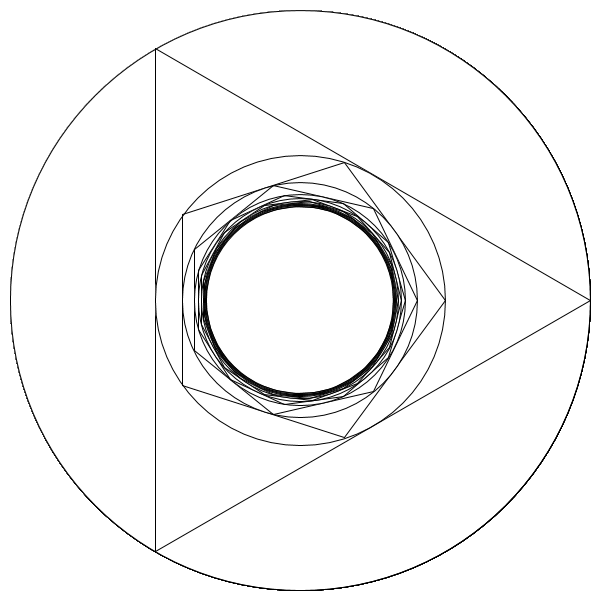

Follow this construction: draw a circle and inscribe a triangle inside it; inscribe a circle inside
this triangle and repeat the process, now inscribing a square. Continue this steps using pentagons,
hexagons, heptagons, etc.
The ratio between the radius of the outer circle and the inner limit circle is called the
Kepler-Bouwkamp constant.
As described by Adrian R. Kitson's paper The prime analog of the Kepler-Bouwkamp constant,
that same steps can be done using other sequences, including that of prime numbers.
On that article, Adrian derives the value of the constant, but doesn't include any image of the
the construction that'd result from the process.

I really like those kind of constructions, so I implemented it using Quil
to get an idea how it looks. Here comes the code: